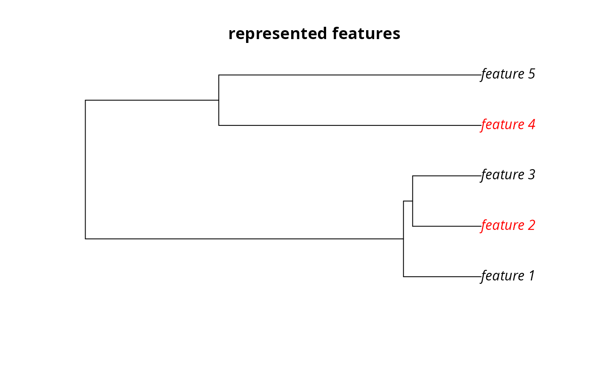
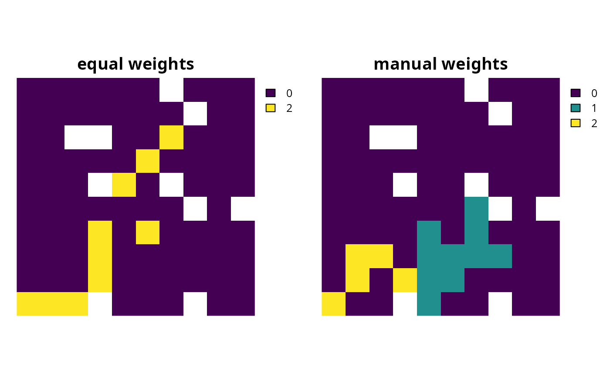

Conservation planning problems that aim to maximize the representation of features given a budget often will not able to conserve all of the features unless the budget is very high. In such budget-limited problems, it may be desirable to prefer the representation of some features over other features. This information can be incorporated into the problem using weights. Weights can be applied to a problem to favor the representation of some features over other features when making decisions about how the budget should be allocated.
# S4 method for ConservationProblem,numeric add_feature_weights(x, weights) # S4 method for ConservationProblem,matrix add_feature_weights(x, weights)
Arguments
| x |
|
|---|---|
| weights |
|
Value
ConservationProblem-class object with the weights
added to it.
Details
Weights can only be applied to problems that have an objective
that is budget limited (e.g. add_max_cover_objective). #'
They can be applied to problems that aim to maximize phylogenetic
representation (add_max_phylo_objective) to favor the
representation of specific features over the representation of
some phylogenetic branches. Weights cannot be negative values
and must have values that are equal to or larger than zero.
Note that planning unit costs are scaled to 0.01 to identify
the cheapest solution among multiple optimal solutions. This means
that the optimization process will favor cheaper solutions over solutions
that meet feature targets (or occurrences) when feature weights are
lower than 0.01.
numericcontaining weights for each feature. Note that this type of argument cannot be used to specify weights for problems with multiple zones.
matrixcontaining weights for each feature in each zone. Here, each row corresponds to a different feature in argument to
x, each column corresponds to a different zone in argument tox, and each cell contains the weight value for a given feature that the solution can to secure in a given zone. Note that if the problem contains targets created usingadd_manual_targetsthen amatrixshould be supplied containing a single column that indicates that weight for fulfilling each target.
See also
Examples
#>#> #>#> #> #># load data data(sim_pu_raster, sim_features, sim_phylogeny, sim_pu_zones_stack, sim_features_zones) # create minimal problem that aims to maximize the number of features # adequately conserved given a total budget of 3800. Here, each feature # needs 20 % of its habitat for it to be considered adequately conserved p1 <- problem(sim_pu_raster, sim_features) %>% add_max_features_objective(budget = 3800) %>% add_relative_targets(0.2) %>% add_binary_decisions() # create weights that assign higher importance to features with less # suitable habitat in the study area (w2 <- exp((1 / cellStats(sim_features, "sum")) * 200))#> layer.1 layer.2 layer.3 layer.4 layer.5 #> 10.10634 38.59208 16.19564 17.01158 739.90699# create problem using rarity weights p2 <- p1 %>% add_feature_weights(w2) # create manually specified weights that assign higher importance to # certain features. These weights could be based on a pre-calculated index # (e.g. an index measuring extinction risk where higher values # denote higher extinction risk) w3 <- c(0, 0, 0, 100, 200) p3 <- p1 %>% add_feature_weights(w3)#> Optimize a model with 6 rows, 95 columns and 545 nonzeros #> Variable types: 0 continuous, 95 integer (95 binary) #> Coefficient statistics: #> Matrix range [2e-01, 2e+02] #> Objective range [1e-04, 1e+00] #> Bounds range [1e+00, 1e+00] #> RHS range [4e+03, 4e+03] #> Found heuristic solution: objective -0.0000000 #> Presolve time: 0.00s #> Presolved: 6 rows, 95 columns, 545 nonzeros #> Variable types: 0 continuous, 95 integer (95 binary) #> Presolved: 6 rows, 95 columns, 545 nonzeros #> #> #> Root relaxation: objective 4.861092e+00, 25 iterations, 0.00 seconds #> #> Nodes | Current Node | Objective Bounds | Work #> Expl Unexpl | Obj Depth IntInf | Incumbent BestBd Gap | It/Node Time #> #> 0 0 4.86109 0 6 -0.00000 4.86109 - - 0s #> 0 0 4.85281 0 7 -0.00000 4.85281 - - 0s #> 0 0 4.85160 0 8 -0.00000 4.85160 - - 0s #> 0 0 4.85032 0 9 -0.00000 4.85032 - - 0s #> 0 0 4.84755 0 9 -0.00000 4.84755 - - 0s #> 0 0 4.84666 0 11 -0.00000 4.84666 - - 0s #> 0 0 4.84153 0 10 -0.00000 4.84153 - - 0s #> 0 0 4.84116 0 10 -0.00000 4.84116 - - 0s #> 0 0 4.84102 0 10 -0.00000 4.84102 - - 0s #> 0 0 4.84101 0 13 -0.00000 4.84101 - - 0s #> 0 0 4.84101 0 13 -0.00000 4.84101 - - 0s #> H 0 0 1.9980302 4.84101 142% - 0s #> 0 2 4.84053 0 13 1.99803 4.84053 142% - 0s #> #> Cutting planes: #> Cover: 178 #> MIR: 6 #> Inf proof: 2 #> #> Explored 2770 nodes (24257 simplex iterations) in 0.51 seconds #> Thread count was 1 (of 16 available processors) #> #> Solution count 2: 1.99803 -0 #> #> Optimal solution found (tolerance 1.00e-01) #> Best objective 1.998030237826e+00, best bound 1.998519897325e+00, gap 0.0245% #> Optimize a model with 6 rows, 95 columns and 545 nonzeros #> Variable types: 0 continuous, 95 integer (95 binary) #> Coefficient statistics: #> Matrix range [2e-01, 2e+02] #> Objective range [1e-04, 7e+02] #> Bounds range [1e+00, 1e+00] #> RHS range [4e+03, 4e+03] #> Found heuristic solution: objective -0.0000000 #> Presolve time: 0.00s #> Presolved: 6 rows, 95 columns, 545 nonzeros #> Variable types: 0 continuous, 95 integer (95 binary) #> Presolved: 6 rows, 95 columns, 545 nonzeros #> #> #> Root relaxation: objective 8.196656e+02, 25 iterations, 0.00 seconds #> #> Nodes | Current Node | Objective Bounds | Work #> Expl Unexpl | Obj Depth IntInf | Incumbent BestBd Gap | It/Node Time #> #> 0 0 819.66564 0 6 -0.00000 819.66564 - - 0s #> 0 0 819.63954 0 7 -0.00000 819.63954 - - 0s #> 0 0 819.55591 0 8 -0.00000 819.55591 - - 0s #> 0 0 819.12459 0 8 -0.00000 819.12459 - - 0s #> 0 0 819.05799 0 9 -0.00000 819.05799 - - 0s #> 0 0 819.05607 0 11 -0.00000 819.05607 - - 0s #> 0 0 819.04921 0 11 -0.00000 819.04921 - - 0s #> 0 0 819.04915 0 11 -0.00000 819.04915 - - 0s #> 0 0 819.03699 0 11 -0.00000 819.03699 - - 0s #> H 0 0 54.7856602 819.03699 1395% - 0s #> H 0 0 54.7856686 819.03699 1395% - 0s #> 0 2 818.83972 0 11 54.78567 818.83972 1395% - 0s #> H 40 28 739.9049383 780.66105 5.51% 4.4 0s #> #> Cutting planes: #> Cover: 1 #> MIR: 2 #> StrongCG: 2 #> #> Explored 41 nodes (232 simplex iterations) in 0.03 seconds #> Thread count was 1 (of 16 available processors) #> #> Solution count 4: 739.905 54.7857 54.7857 -0 #> #> Optimal solution found (tolerance 1.00e-01) #> Best objective 7.399049383385e+02, best bound 7.806610483892e+02, gap 5.5083% #> Optimize a model with 6 rows, 95 columns and 545 nonzeros #> Variable types: 0 continuous, 95 integer (95 binary) #> Coefficient statistics: #> Matrix range [2e-01, 2e+02] #> Objective range [1e-04, 2e+02] #> Bounds range [1e+00, 1e+00] #> RHS range [4e+03, 4e+03] #> Found heuristic solution: objective -0.0000000 #> Presolve removed 3 rows and 3 columns #> Presolve time: 0.00s #> Presolved: 3 rows, 92 columns, 272 nonzeros #> Variable types: 0 continuous, 92 integer (92 binary) #> Presolved: 3 rows, 92 columns, 272 nonzeros #> #> #> Root relaxation: objective 2.999979e+02, 12 iterations, 0.00 seconds #> #> Nodes | Current Node | Objective Bounds | Work #> Expl Unexpl | Obj Depth IntInf | Incumbent BestBd Gap | It/Node Time #> #> 0 0 299.99794 0 2 -0.00000 299.99794 - - 0s #> H 0 0 99.9979882 299.99794 200% - 0s #> 0 0 299.99794 0 3 99.99799 299.99794 200% - 0s #> 0 2 299.99794 0 3 99.99799 299.99794 200% - 0s #> H 108 94 99.9979941 299.99794 200% 2.7 0s #> H 9906 6341 99.9979960 299.99794 200% 2.0 0s #> H10202 4717 199.9979453 299.99794 50.0% 1.9 0s #> #> Cutting planes: #> Flow cover: 1 #> #> Explored 10202 nodes (19912 simplex iterations) in 0.59 seconds #> Thread count was 1 (of 16 available processors) #> #> Solution count 5: 199.998 99.998 99.998 ... -0 #> #> Optimal solution found (tolerance 1.00e-01) #> Best objective 1.999979453434e+02, best bound 1.999979453434e+02, gap 0.0000%# plot solutions plot(s1, main = c("equal weights", "rarity weights", "manual weights"), axes = FALSE, box = FALSE)# create problem with a maximum phylogenetic representation objective, # where each feature needs 10 % of its distribution to be secured for # it to be adequately conserved and a total budget of 1900 p4 <- problem(sim_pu_raster, sim_features) %>% add_max_phylo_objective(1900, sim_phylogeny) %>% add_relative_targets(0.1) %>% add_binary_decisions()#> Optimize a model with 14 rows, 103 columns and 565 nonzeros #> Variable types: 0 continuous, 103 integer (103 binary) #> Coefficient statistics: #> Matrix range [2e-01, 2e+02] #> Objective range [1e-05, 1e+00] #> Bounds range [1e+00, 1e+00] #> RHS range [2e+03, 2e+03] #> Found heuristic solution: objective -0.0000000 #> Presolve removed 5 rows and 5 columns #> Presolve time: 0.00s #> Presolved: 9 rows, 98 columns, 555 nonzeros #> Variable types: 0 continuous, 98 integer (98 binary) #> Presolved: 9 rows, 98 columns, 555 nonzeros #> #> #> Root relaxation: objective 3.530487e+00, 27 iterations, 0.00 seconds #> #> Nodes | Current Node | Objective Bounds | Work #> Expl Unexpl | Obj Depth IntInf | Incumbent BestBd Gap | It/Node Time #> #> 0 0 3.53049 0 6 -0.00000 3.53049 - - 0s #> 0 0 3.48401 0 6 -0.00000 3.48401 - - 0s #> 0 0 3.48370 0 7 -0.00000 3.48370 - - 0s #> 0 0 3.48360 0 8 -0.00000 3.48360 - - 0s #> H 0 0 1.5482356 3.48360 125% - 0s #> 0 0 3.48358 0 9 1.54824 3.48358 125% - 0s #> 0 0 3.17168 0 6 1.54824 3.17168 105% - 0s #> 0 0 3.17168 0 6 1.54824 3.17168 105% - 0s #> 0 2 3.15588 0 6 1.54824 3.15588 104% - 0s #> H 3 2 2.3877778 2.69451 12.8% 8.0 0s #> H 10 0 2.6945055 2.69451 0.00% 3.8 0s #> #> Cutting planes: #> Cover: 1 #> MIR: 1 #> #> Explored 10 nodes (87 simplex iterations) in 0.02 seconds #> Thread count was 1 (of 16 available processors) #> #> Solution count 4: 2.69451 2.38778 1.54824 -0 #> #> Optimal solution found (tolerance 1.00e-01) #> Best objective 2.694505497987e+00, best bound 2.694505497987e+00, gap 0.0000%# find which features have their targets met targets_met4 <- cellStats(s4 * sim_features, "sum") > (0.1 * cellStats(sim_features, "sum")) # plot the example phylogeny and color the represented features in red plot(sim_phylogeny, main = "represented features", tip.color = replace(rep("black", nlayers(sim_features)), which(targets_met4), "red"))# we can see here that the third feature ("layer.3", i.e. # sim_features[[3]]) is not represented in the solution. Let us pretend # that it is absolutely critical this feature is adequately conserved # in the solution. For example, this feature could represent a species # that plays important role in the ecosystem, or a species that is # important commercial activities (e.g. eco-tourism). So, to generate # a solution that conserves the third feature whilst also aiming to # maximize phylogenetic diversity, we will create a set of weights that # assign a particularly high weighting to the third feature w5 <- c(0, 0, 1000, 0, 0) # we can see that this weighting (i.e. w5[3]) has a much higher value than # the branch lengths in the phylogeny so solutions that represent this # feature be much closer to optimality print(sim_phylogeny$edge.length)#> [1] 0.51700590 0.35235209 0.62721990 0.09737975 0.30672795 0.99759191 0.52340412 #> [8] 0.14867732# create problem with high weighting for the third feature and solve it s5 <- p4 %>% add_feature_weights(w5) %>% solve()#> Optimize a model with 14 rows, 103 columns and 565 nonzeros #> Variable types: 0 continuous, 103 integer (103 binary) #> Coefficient statistics: #> Matrix range [2e-01, 2e+02] #> Objective range [1e-05, 1e+03] #> Bounds range [1e+00, 1e+00] #> RHS range [2e+03, 2e+03] #> Found heuristic solution: objective -0.0000000 #> Presolve removed 5 rows and 5 columns #> Presolve time: 0.00s #> Presolved: 9 rows, 98 columns, 555 nonzeros #> Variable types: 0 continuous, 98 integer (98 binary) #> Presolved: 9 rows, 98 columns, 555 nonzeros #> #> #> Root relaxation: objective 1.003530e+03, 25 iterations, 0.00 seconds #> #> Nodes | Current Node | Objective Bounds | Work #> Expl Unexpl | Obj Depth IntInf | Incumbent BestBd Gap | It/Node Time #> #> 0 0 1003.53049 0 6 -0.00000 1003.53049 - - 0s #> 0 0 1003.48401 0 6 -0.00000 1003.48401 - - 0s #> H 0 0 1001.5482360 1003.48401 0.19% - 0s #> #> Cutting planes: #> Cover: 1 #> #> Explored 1 nodes (33 simplex iterations) in 0.01 seconds #> Thread count was 1 (of 16 available processors) #> #> Solution count 2: 1001.55 -0 #> #> Optimal solution found (tolerance 1.00e-01) #> Best objective 1.001548235972e+03, best bound 1.003484011466e+03, gap 0.1933%# find which features have their targets met targets_met5 <- cellStats(s5 * sim_features, "sum") > (0.1 * cellStats(sim_features, "sum")) # plot the example phylogeny and color the represented features in red # here we can see that this solution only adequately conserves the # third feature. This means that, given the budget, we are faced with the # trade-off of conserving either the third feature, or a phylogenetically # diverse set of three different features. plot(sim_phylogeny, main = "represented features", tip.color = replace(rep("black", nlayers(sim_features)), which(targets_met5), "red"))# create multi-zone problem with maximum features objective, # with 10 % representation targets for each feature, and set # a budget such that the total maximum expenditure in all zones # cannot exceed 3000 p6 <- problem(sim_pu_zones_stack, sim_features_zones) %>% add_max_features_objective(3000) %>% add_relative_targets(matrix(0.1, ncol = 3, nrow = 5)) %>% add_binary_decisions() # create weights that assign equal weighting for the representation # of each feature in each zone except that it does not matter if # feature 1 is represented in zone 1 and it really important # that feature 3 is really in zone 1 w7 <- matrix(1, ncol = 3, nrow = 5) w7[1, 1] <- 0 w7[3, 1] <- 100 # create problem with weights p7 <- p6 %>% add_feature_weights(w7)#> Optimize a model with 106 rows, 285 columns and 1905 nonzeros #> Variable types: 0 continuous, 285 integer (285 binary) #> Coefficient statistics: #> Matrix range [2e-01, 2e+02] #> Objective range [3e-05, 1e+00] #> Bounds range [1e+00, 1e+00] #> RHS range [1e+00, 3e+03] #> Found heuristic solution: objective -0.0000000 #> Presolve time: 0.00s #> Presolved: 106 rows, 285 columns, 1905 nonzeros #> Variable types: 0 continuous, 285 integer (285 binary) #> Presolved: 106 rows, 285 columns, 1905 nonzeros #> #> #> Root relaxation: objective 8.038871e+00, 157 iterations, 0.00 seconds #> #> Nodes | Current Node | Objective Bounds | Work #> Expl Unexpl | Obj Depth IntInf | Incumbent BestBd Gap | It/Node Time #> #> 0 0 8.03887 0 12 -0.00000 8.03887 - - 0s #> H 0 0 4.9996057 8.03887 60.8% - 0s #> 0 0 7.84628 0 17 4.99961 7.84628 56.9% - 0s #> H 0 0 4.9996235 7.84628 56.9% - 0s #> 0 0 7.82805 0 18 4.99962 7.82805 56.6% - 0s #> 0 0 7.80026 0 22 4.99962 7.80026 56.0% - 0s #> 0 0 7.79505 0 26 4.99962 7.79505 55.9% - 0s #> 0 0 7.79038 0 28 4.99962 7.79038 55.8% - 0s #> 0 0 7.78917 0 32 4.99962 7.78917 55.8% - 0s #> 0 0 7.78779 0 29 4.99962 7.78779 55.8% - 0s #> 0 0 7.78743 0 32 4.99962 7.78743 55.8% - 0s #> 0 0 7.78734 0 33 4.99962 7.78734 55.8% - 0s #> 0 0 7.78348 0 32 4.99962 7.78348 55.7% - 0s #> H 0 0 4.9996318 7.78348 55.7% - 0s #> 0 0 7.78263 0 32 4.99963 7.78263 55.7% - 0s #> 0 0 7.78206 0 34 4.99963 7.78206 55.7% - 0s #> 0 0 7.78185 0 37 4.99963 7.78185 55.6% - 0s #> 0 0 7.77865 0 35 4.99963 7.77865 55.6% - 0s #> 0 0 7.77705 0 33 4.99963 7.77705 55.6% - 0s #> 0 0 7.77691 0 34 4.99963 7.77691 55.5% - 0s #> 0 0 7.77405 0 39 4.99963 7.77405 55.5% - 0s #> 0 0 7.77359 0 39 4.99963 7.77359 55.5% - 0s #> 0 0 7.77346 0 41 4.99963 7.77346 55.5% - 0s #> 0 0 7.77233 0 41 4.99963 7.77233 55.5% - 0s #> 0 0 7.77233 0 41 4.99963 7.77233 55.5% - 0s #> 0 2 7.76968 0 41 4.99963 7.76968 55.4% - 0s #> H 22 4 4.9996404 7.76260 55.3% 27.0 0s #> #> Cutting planes: #> Gomory: 6 #> Cover: 13 #> MIR: 14 #> StrongCG: 7 #> Inf proof: 4 #> #> Explored 79 nodes (2805 simplex iterations) in 0.14 seconds #> Thread count was 1 (of 16 available processors) #> #> Solution count 5: 4.99964 4.99963 4.99962 ... -0 #> #> Optimal solution found (tolerance 1.00e-01) #> Best objective 4.999640385924e+00, best bound 5.433392965972e+00, gap 8.6757%#> Optimize a model with 106 rows, 285 columns and 1905 nonzeros #> Variable types: 0 continuous, 285 integer (285 binary) #> Coefficient statistics: #> Matrix range [2e-01, 2e+02] #> Objective range [3e-05, 1e+02] #> Bounds range [1e+00, 1e+00] #> RHS range [1e+00, 3e+03] #> Found heuristic solution: objective -0.0000000 #> Presolve removed 1 rows and 1 columns #> Presolve time: 0.00s #> Presolved: 105 rows, 284 columns, 1814 nonzeros #> Variable types: 0 continuous, 284 integer (284 binary) #> Presolved: 105 rows, 284 columns, 1814 nonzeros #> #> #> Root relaxation: objective 1.060184e+02, 195 iterations, 0.00 seconds #> #> Nodes | Current Node | Objective Bounds | Work #> Expl Unexpl | Obj Depth IntInf | Incumbent BestBd Gap | It/Node Time #> #> 0 0 106.01841 0 15 -0.00000 106.01841 - - 0s #> H 0 0 102.9995974 106.01841 2.93% - 0s #> #> Explored 1 nodes (195 simplex iterations) in 0.01 seconds #> Thread count was 1 (of 16 available processors) #> #> Solution count 2: 103 -0 #> #> Optimal solution found (tolerance 1.00e-01) #> Best objective 1.029995973779e+02, best bound 1.060184107668e+02, gap 2.9309%# plot solutions plot(stack(category_layer(s6), category_layer(s7)), main = c("equal weights", "manual weights"), axes = FALSE, box = FALSE)# create minimal problem to show the correct method for setting # weights for problems with manual targets p8 <- problem(sim_pu_raster, sim_features) %>% add_max_features_objective(budget = 1500) %>% add_manual_targets(data.frame(feature = c("layer.1", "layer.4"), type = "relative", target = 0.1)) %>% add_feature_weights(matrix(c(1, 200), ncol = 1)) %>% add_binary_decisions()#> Optimize a model with 3 rows, 92 columns and 272 nonzeros #> Variable types: 0 continuous, 92 integer (92 binary) #> Coefficient statistics: #> Matrix range [5e-01, 2e+02] #> Objective range [1e-04, 2e+02] #> Bounds range [1e+00, 1e+00] #> RHS range [2e+03, 2e+03] #> Found heuristic solution: objective -0.0000000 #> Presolve removed 3 rows and 92 columns #> Presolve time: 0.00s #> Presolve: All rows and columns removed #> #> Explored 0 nodes (0 simplex iterations) in 0.00 seconds #> Thread count was 1 (of 16 available processors) #> #> Solution count 1: -0 #> #> Optimal solution found (tolerance 1.00e-01) #> Best objective -0.000000000000e+00, best bound -0.000000000000e+00, gap 0.0000%